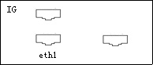

GEMS Proprietary Class: A
Direction 5117807-800, Rev# A
GEMS Proprietary Class: A |
| Required Persons | Preliminary Reqs | Procedure | Finalization |
|---|---|---|---|
| 1 | Timing Not Applicable | 35 mins | 20 mins |
This procedure describes the replacement of the GOC3 Console IG Node. After the IG Node has been replaced, several tests are required:
Communication from the DARC Node to the IG Node
Testing of the RAC
| Last Revised: | March 31, 2005 |
| Item | Qty | Effectivity | Part# | Manufacturer | |
|---|---|---|---|---|---|
| Medium Phillips Screwdriver | 1 | - | - | - | |
No consumables required.
| Item | Qty | Effectivity | Part# | Manufacturer | |
|---|---|---|---|---|---|
| IG Node | - | - | - | ||
| Prevent permanent damage to the static-sensitive boards. Attach an anti-static wrist-strap to your wrist and to a bare metal grounding point. | |
| All cable connector screw-locks must be finger-tightened, only. Do NOT use any tool to tighten cable screw-locks. | |
| Follow ALL required safety and PPE procedures customary for your organization, when working on this product. | |
| Condition | Reference | Eff |
|---|---|---|
Understand the conventions used in this publication | - | |
Only trained service personnel should service the GE CT Scanner. | - | - |
Select one of the following methods to Power OFF the Operator Console:
If Applications are up, click on the [Shut Down] button and select [Shutdown].
If Applications are down, open a Unix Shell at the Toolchest. Enter (type) the following commands, at the indicated prompts:
ctuser@hostname: su -
Password: #bigguy
root@hostname: halt
The Operator Console monitor will display a 'System Halted' message when it is acceptable to power OFF the Operator Console.
Power OFF the console at the front panel switch.
Remove the front and rear Operator Console covers.
| Prevent permanent damage to the static-sensitive boards. Attach an anti-static wrist-strap to your wrist and to a bare metal grounding point. | |
Remove the rear Ethernet cable connection to the IG Node. At rear, remove the IG Node power cord. Verify cable label is clearly marked. If necessary, add a label for clarity.
Remove and retain the two (2) front mounting screws and slide out the IG Node.
Slide the replacement IG Node into the Operator Console.
Replace the two (2) front mounting screws on the front of the IG Node.
Verify the power switch located at the rear of the IG Node is in the ON position.
| All cable connector screw-locks must be finger-tightened, only. Do NOT use any tool to tighten cable screw-locks. | |
Replace the rear Ethernet cable connection to the IG Node, between DARC Ethernet 0 and IG1 Ethernet 1.
Illustration 1: IG Node Ethernet 1 Port Location

Power ON the Operator Console at the front switch.
At the DARC Node, verify the DARC Node powers-up properly, as the system is started. Verify OK message for 'Starting DARC Power.'
At the IG Node, verify the rear panel power switch is ON, the Ethernet cable is properly connected, and the power cord is plugged in.
Stop Applications from auto-starting at the 5 second PINK Box.
The DARC Node must be up to check the IG Node(s). Perform ping and rsh commands on the DARC Node, as follows:
Open a Unix Shell.
ctuser@hostname: ping darc.
Verify ping is successful.
Press < Ctrl+C> to stop ping process.
ctuser@hostname: rsh darc.
Verify ctuser@darc prompt is present.
| NOTE: | This Unix Shell will be used again, so do not exit or close, at this time. |
| NOTE: | In the case of an IG Node replacement, or troubleshooting with an IG Node swap, the affected IG node must be manually power-cycled (powered down and then up again), at the front panel. The manual power cycle is required for the IG Node to obtain an IP address and an IG#. |
Power OFF the replaced IG Node(s) at the (top) front panel switch.
See Illustration 2, for switch location.
Illustration 2: Front Panel of IG Node

Power ON the replaced IG Node(s) at the (top) front panel switch.
See Illustration 2, for switch location.
Wait 2 to 3 minutes.
In the open Unix shell (window), verify the IG Node:.
ctuser@darc: rsh ig1
If rsh to ig1 is successful, then type: exit, to get out of ig remote shell
Type: exit, to get out of DARC Node remote shell.
Type: exit, to close the Unix Shell.
The racdiags command runs diagnostics on the IG Node. The command racdiags or racdiags 1 runs racdiags on IG1 Node.
Open a Unix Shell (window) to verify the IG Node RAC.
ctuser@hostname: cd /usr/g/bin
ctuser@hostname: ls rac*
(racdiags* are listed)
ctuser@hostname: racdiags
9 (counts up from 0 to 9 for the following 10 loops)
0 SRAM A Incr Pat PASSED 10 loops 1 SRAM A Walking Pat PASSED 10 loops 2 SRAM A Address Pat PASSED 10 loops 3 SRAM B Incr Pat PASSED 10 loops 4 SRAM B Walking Pat PASSED 10 loops 5 SRAM B Address Pat PASSED 10 loops 6 FLASH Region 0 PASSED 10 loops 7 FLASH Region 1 PASSED 10 loops 13 DMA host<-image mem PASSED 10 loops 14 DMA host->projection mem PASSED 10 loops 10 Loops: All tests passed
In the open Unix Shell, start Application Software:
ctuser@hostname: st
A pink pop-up Attention Message appears:
OC initializing. Please wait...
Select [OK] for other pink message boxes that appear throughout the reboot process.
If any Recon Selftest Failures are encountered, review the error log.
The Reconstruction (not Scan) portion of the system can be tested at this point.
Very you are not Shut-down or Paused. Select [Recon Management], then [Restart Queue], if not in Idle Mode.
Click on the [RETRO RECON] selection on the left monitor.
Click on [RAT GOLD] series.
Click on [SELECT SERIES].
Click on [CONFIRM].
Verify the image(s) reconstruct and are displayed.
Click on [QUIT].
Take some scans (e.g., scout, axial & helical).
Verify the image(s) reconstruct and are displayed.
Install the front and rear Operator Console covers.